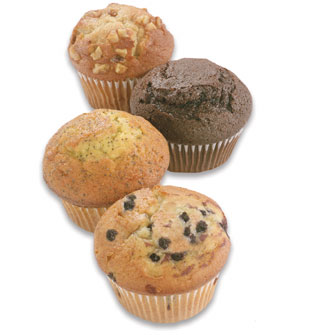

*Make sure to enable plug-ins! Works best in Internet Explorer*
If you like muffins, you've come to the right place, because we do too. We at the Muffin Zone pride ourselves in hosting the richest and most content filled muffin fan club on the internet.
If you don't know what a muffin is, we have two things to say to you.
if you have any further questions on how to identify a muffin, please see the slideshow below.
